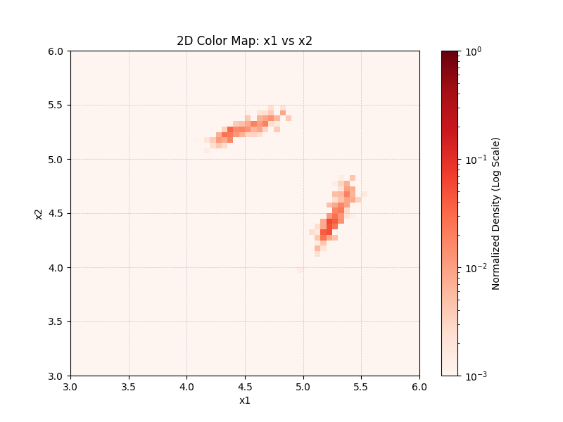

チュートリアル#
ここでは PAMC 計算の結果を解析する一連の流れを、具体的な例を用いて説明します。 各ツールのオプションや出力形式の詳細については リファレンス を参照してください。
前提条件#
Python 3.9 以上
matplotlib（ヒストグラムや model evidence のプロットに必要。ODAT-SE 本体とともに自動でインストールされます）
ポスト処理ツールは ODAT-SE のインストール時に
odatse_で始まるコマンド（odatse_extract_combinedなど）として導入されます
解析の流れ#
PAMC 計算の結果を解析する全体的な流れは以下の通りです。
PAMC計算を実行 し、MCMC ログと分配関数の値を取得する
model evidence を計算 し、最適な逆温度 \(\beta\) を特定する
温度点ごとにデータを集約 し、各温度での replica 配置をまとめる
ヒストグラムを作成 し、事後確率分布を可視化する
各ステップの出力が次のステップの入力になります。
PAMC計算
├─ output/fx.txt ──────────────→ (2) model evidence 計算
└─ output/{rank}/result_T*.txt ─→ (3) 温度点ごとに集約
└─ summarized/ ─→ (4) ヒストグラム作成
1. PAMC計算を実行する#
例として TRHEPD 順問題ソルバー (odatse-STR) の計算例を取り上げます。 パラメータの次元は 3 で、温度点は T=1.0 から 1.0e-6 まで対数スケールで 51点とっています。 各 annealing の MCMC ステップ数は 20、レプリカ数はプロセスあたり 100、MPI プロセス数は 4 とします。 この例で用いた入力ファイルやデータの一式は、 ODAT-SE Gallery の odatse-STR の解析例を参照してください。 なお、以下に示す出力例は紙面の都合で一部を省略・簡略化しています。
計算結果は output 以下に出力されます。 主な出力ファイルは以下の2種類です。
output/{rank}/result_T{index}.txt -- MCMC の計算ログ（温度点ごと）
# step walker T fx x1 x2 x3 weight ancestor
0 0 1.000000e+00 1.234567e+01 4.500 3.200 5.100 1.000000e+00 0
1 0 1.000000e+00 1.198765e+01 4.520 3.180 5.080 1.000000e+00 0
...
各行は1つの walker（レプリカ）の1回の MCMC ステップに対応し、温度 T、目的関数値 fx、パラメータ値 x1〜x3、サンプリング重み weight、リサンプリング元を示す ancestor が記録されています。
列ラベルは label_list の設定に依存します（省略時は x1, x2, ...）。本例の探索パラメータは原子座標に対応する3変数で、本文中では \(z_1, z_2, z_3\) と表記します。
output/fx.txt -- 分配関数と f(x) の統計量
# $1: 1/T
# $2: mean of f(x)
# $3: standard error of f(x)
# $4: number of replicas
# $5: log(Z/Z0)
# $6: acceptance ratio
1.000000e+00 1.234e+01 5.678e-01 400 0.000000e+00 0.850
...
各行は温度点に対応し、逆温度 beta、f(x) の平均値・標準誤差、レプリカ数、分配関数の対数比、採択率が記録されています。
注釈
export_combined_files を true にしている場合はログが combined.txt に集約されています。
odatse_extract_combined を使って result.txt を取り出してください。
取り出される result.txt は温度点ごとに分割されていないため、続けて odatse_separateT で
温度点ごとのファイル result_T{index}.txt に分割してから次のステップに進んでください。
odatse_extract_combined -t result.txt -d output
odatse_separateT -d output
注釈
separate_T が false の場合はログが result.txt に出力されます。
odatse_separateT を使って温度点ごとのファイルに分割してください。
odatse_separateT -d output
2. model evidence を計算する#
model evidence \(\log P(D;\beta)\) は次の式で表されます。
output/fx.txt に出力された分配関数 \(\log Z/Z_0\) の値を用いて model evidence を計算します。その際に、事前確率の規格化因子である探索空間の体積 \(V_\Omega\) とデータ点の数 \(n\) を指定します。
今の例では探索空間は z1, z2, z3 についてそれぞれ [3.0, 6.0] の領域をとっています。データ点の数 (experiment.txt の行数) は 70 です。
odatse_plt_model_evidence -V 27.0 -n 70 output/fx.txt
model evidence の値は model_evidence.txt に書き出されます。また、beta についてプロットした図が model_evidence.png に出力されます。 オプションの詳細は odatse_plt_model_evidence を参照してください。

model evidence をプロットした図。最大値を与える逆温度は \(\beta = 1.91\times 10^5\) (Tstep=44)。#
model evidence が最大となる \(\beta\) は、データに対してモデルの説明力が最も高い逆温度に対応します。 \(\beta\) が小さすぎると事前分布の影響が大きく（アンダーフィッティング）、大きすぎるとデータのノイズまで拾ってしまいます（オーバーフィッティング）。 最適な \(\beta\) における事後分布を可視化することで、パラメータの推定結果を評価できます。
3. 温度点ごとに探索データをまとめる#
output/{rank}/result_T{index}.txt に出力されている MCMC ステップの情報から、annealing が終了した時点の replica の配置を取り出し、温度点ごとのファイルにまとめます。
odatse_summarize_each_T -d output -o summarized
summarized/ 以下に result_T{index}_summarized.txt として書き出されます。 オプションの詳細は odatse_summarize_each_T を参照してください。
4. 1次元および2次元周辺化ヒストグラムを作成する#
replica配置のデータを用いて、重み付けされた事後確率分布 \(P(z_i|D;\beta) = \dfrac{P(D|z_i;\beta) P(z_i)}{P(D;\beta)}\) をプロットします。
Step 2 で特定した最適な \(\beta\) 付近の温度点に注目して、パラメータの分布を確認します。
各 \(z_i\) に沿って周辺化した1次元ヒストグラムを作成するには、以下を実行します。
odatse_plt_1D_histogram -d summarized -o 1dhist -r 3.0,6.0
summarized/ のデータファイルそれぞれについてヒストグラムが作成され、1dhist/ 以下に出力されます。 オプションの詳細は odatse_plt_1D_histogram を参照してください。

1次元周辺化ヒストグラムの出力例。(参考として高温側の Tstep=22, \(\beta=4.365\times 10^2\) の場合を示します)#
2次元に周辺化したヒストグラムを作成するには、以下を実行します。
odatse_plt_2D_histogram -d summarized -o 2dhist -r 3.0,6.0
z1, z2, z3 の組み合わせ (z1,z2), (z1,z3), (z2,z3) についての2次元ヒストグラムが作成され、2dhist/ 以下に出力されます。 2次元ヒストグラムにより、パラメータ間の相関を確認できます。 オプションの詳細は odatse_plt_2D_histogram を参照してください。

2次元周辺化ヒストグラムの出力例。(参考として高温側の Tstep=22 における \(z_1\)-\(z_2\) 軸についてのプロットを示します)#